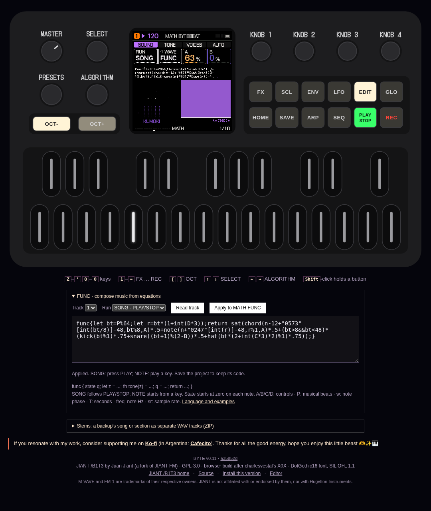

Seleccioná MATH → FUNC SONG o FUNC BEAT y pulsá PLAY. El código define notas, acordes, percusión y secciones; STOP detiene la composición. RUN NOTE conserva el uso como instrumento desde el teclado.
Abrir emulador · Instalador · Código, edición y límites · 22 fórmulas de referencia (.txt)
33 segundos a 120 BPM: acordes y melodía, entrada de percusión después del beat 8, salida en el 48 y reinicio en el 64.
12 segundos de una composición derivada de XOR, divisiones, restos y condiciones temporales.
| Control | SONG | BEAT |
|---|---|---|
| A | Color, armonía y registro | Color de las notas |
| B | Cadencia de caja | Cadencia de caja |
| C | Subdivisión de hats | Subdivisión de hats |
| D | Velocidad de la melodía | Periodo del bombo |
Los audios están normalizados al mismo RMS para facilitar la escucha. Se renderizaron con el motor C. El audio native/WASM coincide muestra a muestra; la escucha y CPU en hardware físico quedan pendientes.

Guardá el proyecto para conservar el programa. El lenguaje de BYTE admite 255 caracteres y 64 instrucciones, con helpers acotados. El archivo de referencia conserva los ejemplos JavaScript originales como material de estudio; no son importaciones compatibles automáticamente. Sus familias de ritmos, armonías y estructura orientarán futuras mejoras de GEN.